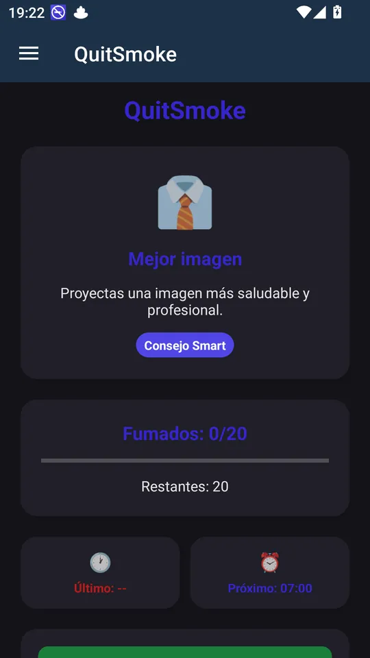
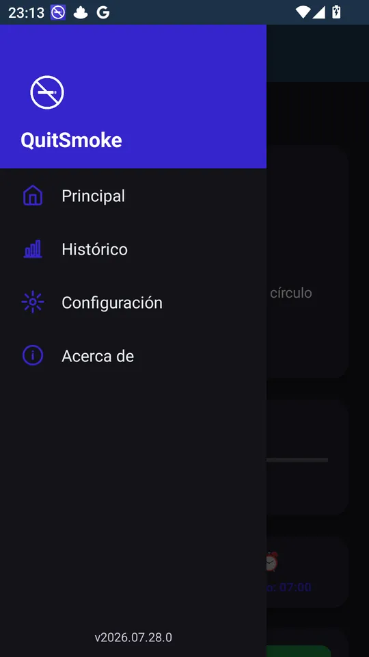
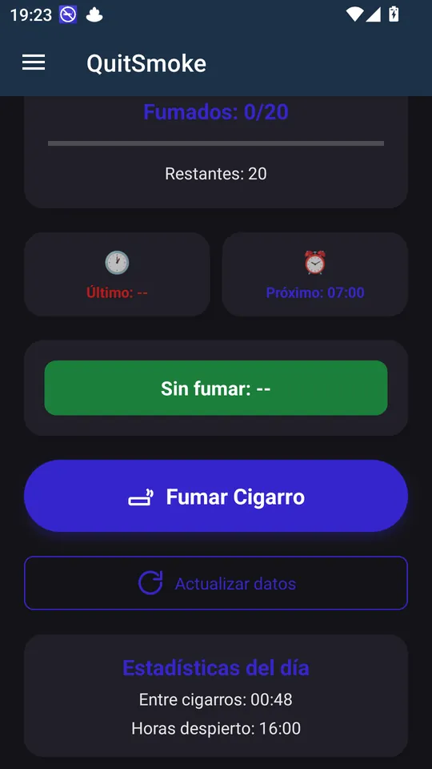

Android
Cut down on smoking little by little: space out your cigarettes and save money.
QuitSmoke helps you smoke less gradually and realistically, at your own pace. Instead of asking you to quit cold turkey, it sets a maximum number of cigarettes per day and spreads that maximum across your waking hours, so you always know how many you have left and when the next one is due.
You log each cigarette with a single tap, even from the notification without opening the app, and QuitSmoke keeps track: how many you've had today, how long you've gone without smoking, how much you've spent and how much you've saved compared with your maximum. When you feel ready, you lower your maximum by one cigarette and keep making progress.
Everything stays on your phone: no accounts, no ads, no trackers. It's free software under the MIT license, made by sOCratic. QuitSmoke is a support tool and is not a substitute for advice from a healthcare professional.
Platforms
Android
Download
License
MIT, free
Source code
Support
QuitSmoke stores your cigarette log, your schedule and your prices only on your phone; there are no accounts, ads or trackers, and none of that leaves your device. The only internet connection is a check for a new version when you open the app, and it doesn't send any of your data.
Screenshots



The guide explains how to set it up, every screen and option, and the most common questions.